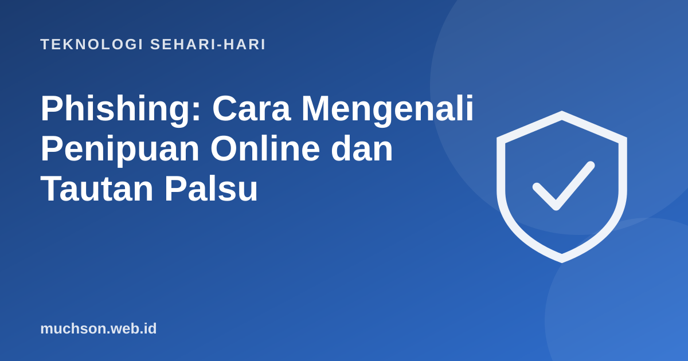

Beranda › Artikel › Teknologi Sehari-hari
Teknologi Sehari-hariPhishing: Cara Mengenali Penipuan Online dan Tautan Palsu
Phishing adalah upaya menipu Anda agar menyerahkan sandi, kode OTP, atau uang dengan menyamar sebagai pihak terpercaya. Modusnya terus berkembang, tetapi pola dasarnya sama: menciptakan rasa panik atau tergiur, lalu mengarahkan Anda ke tautan atau tindakan berbahaya.

Delapan tanda yang perlu diperhatikan
- Mendesak. "Akun diblokir dalam 1 jam", "segera konfirmasi".
- Tawaran terlalu bagus. Hadiah, undian, atau uang gratis tanpa Anda ikut apa pun.
- Alamat tautan janggal. Domain mirip tetapi beda huruf, atau memakai tautan pemendek.
- Pengirim tidak cocok. Nama tampak resmi, tetapi alamat email atau nomor berbeda.
- Meminta data rahasia. Kata sandi, PIN, kode OTP, atau data kartu. Pihak resmi tidak memintanya.
- File aneh. Lampiran atau aplikasi dengan ekstensi seperti .apk dari sumber tidak resmi.
- Bahasa janggal. Banyak kesalahan, atau nada yang tidak biasa dari institusi.
- Menyuruh Anda merahasiakan. "Jangan beri tahu siapa pun" adalah tanda bahaya.
Uji kemampuan Anda
Jika terlanjur klik atau memasukkan data
Aturan emas
Tidak ada organisasi resmi yang meminta kata sandi, PIN, atau OTP lewat pesan atau telepon. Bila ada yang meminta, itu penipuan.
Tanya jawab
Apa itu smishing dan vishing?
Smishing adalah phishing lewat SMS atau pesan, vishing lewat panggilan telepon. Polanya sama dengan phishing email.
Bagaimana memastikan tautan aman?
Jangan klik. Ketik sendiri alamat resmi situs di browser, atau buka lewat aplikasi resminya.
Apakah gembok HTTPS berarti situs aman?
Tidak. Gembok hanya menunjukkan koneksi terenkripsi. Situs penipuan pun bisa memakainya.